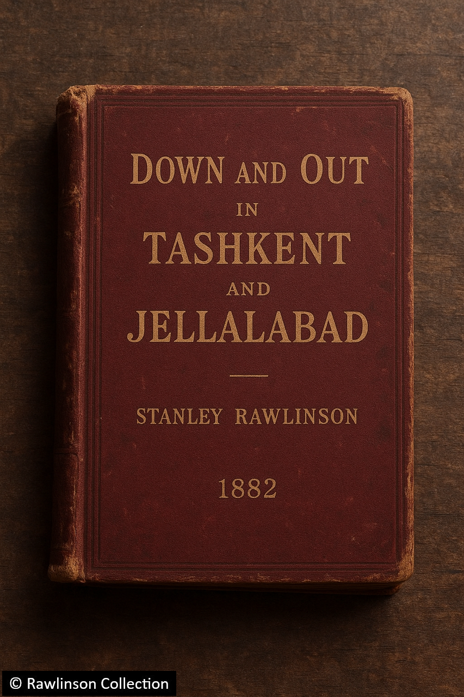

Subcontinental Drift
1831–1833: East India College, Haileybury

Stanley, aged 21, 1835
Before any young gentleman could take up service with the East India Company, he was first required to complete a course of study at the East India College, Haileybury, in Hertfordshire. This institution, sometimes known as "Haileybury College," served as the Company's own finishing school — a place where future administrators of empire were schooled in the languages, customs, and governance of the East.
Here, Stanley Rawlinson distinguished himself in his customary fashion: diligent, curious, and, at times, impatient for adventure. His records note particular aptitude in Classics, History, and Political Economy, and he quickly developed a fascination for the languages of the subcontinent. By the end of his studies, Stanley was said to be near-fluent in Pashto and passably conversant in Sanskrit and Uzbek — an impressive accomplishment for one so young.
In later recollections, Stanley wrote of Haileybury as "a curious crucible where the young Englishman, trained in decorum and empire, is taught the virtues of order but rarely the virtues of understanding." His tutors, though admiring his intellect, noted that he had "itchy feet" and a restless disposition, eager to leave England behind and apply his learning in the field. His opportunity came in the summer of 1833, when he was formally assigned to the Bombay Presidency — his first overseas posting.
1833–1835: The Bombay Presidency
When Stanley arrived in Bombay, the city was at the height of its early nineteenth-century transformation. The Bombay Presidency, then one of the three great administrative divisions of the East India Company (alongside Bengal and Madras), was flourishing.

Letter from Bombay, 1834
Though the surviving record of Stanley's activities in this period is sparse, a handful of letters home offer tantalising glimpses of his daily life. Much of his early work appears to have focused on training and educating local Indians for government service, a role that would have placed him at the forefront of the Company's evolving administrative policy.
Ever restless, however, Stanley found the sedate rhythm of colonial office life stifling. While most of Bombay's European residents sought respite from the oppressive climate in the hill stations each weekend, Stanley — "a single and adventurous young man," as one colleague described him — preferred more ambitious journeys into the interior.
One extraordinary letter from 1834 describes such an expedition, undertaken with a small party including the Deputy Commissioner of Sagar, William Henry Sleeman. The group travelled north toward Lahore and, during the journey, was attacked by a band of Thuggee highwaymen:
"…although outnumbered, our spirited defence made the Thugs quickly abandon their plans and go in search of a softer party. Sleeman fought like The Devil Himself, dispatching four of them single-handed including their Jemadar. I myself killed one and injured a second. Poor Talbot and three of our local guides were less lucky, having been sound asleep when the assault began and been garrotted by the turbans of their assailants."
This chilling encounter would prove historically significant. Contemporary accounts and later correspondence indicate that it was this very incident which galvanised Sleeman's lifelong crusade against the Thuggee cult. Over the following decade, Sleeman led the suppression of the sect, arresting and imprisoning thousands. Though rarely credited, Stanley's letter is one of the earliest eyewitness records of this infamous campaign.
1836–1839: Go West, Young Man

The route westward through Central Asia
By the summer of 1836, the East India Company saw fit to employ Rawlinson in a more challenging and uncertain capacity. He was commissioned to travel westward, most likely as a field agent tasked with forging relationships with tribal leaders and gathering intelligence across the unstable frontier regions beyond the Company's direct control.
Drawing upon his own vivid accounts, later published in his autobiographical memoir Down and Out in Tashkent and Jellalabad (1882), we know that Stanley's travels took him as far west as Ashgabat (modern Turkmenistan) and as far north as Tashkent in what is now Uzbekistan. Along the way, he traversed the Hindu Kush, passed through Jellalabad, Kabul, and Samarkand, and narrowly escaped death on more than one occasion.
His memoir remains, in the words of Vanity Fair, "a thrilling account of the adventures of a young gentleman freed of the shackles of conformity and unburdened by his duty to establishment."
Those wishing to experience these adventures in full may consult the original volume, held at the British Library, which remains one of the cornerstones of the Society's Rawlinsonian Collection. The SRS ultimately intends to expand this website to include annotated extracts from Down and Out, once the necessary materials have been digitised and cross-referenced with Stanley's personal correspondence.
For now, it is enough to record that Stanley survived his years in the subcontinent — though sometimes only just — and returned to England in the spring of 1839, a man transformed. He brought with him a modest personal fortune, an embryonic scholarly reputation, and the first whispers of fame as a plucky and eccentric young adventurer — qualities that would define the legend of Sir Stanley Rawlinson for the next half-century.